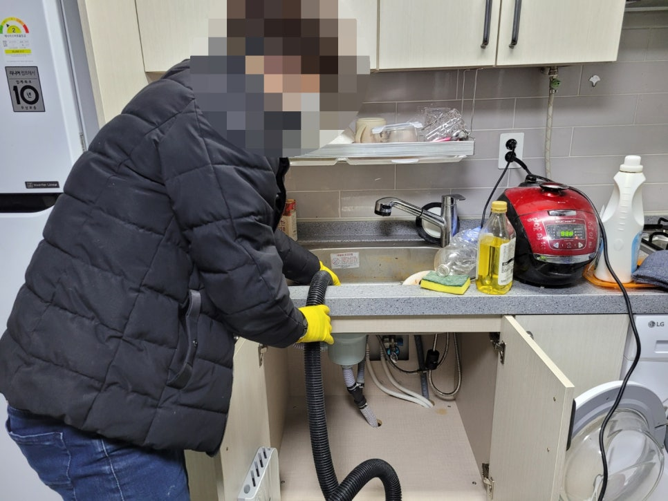
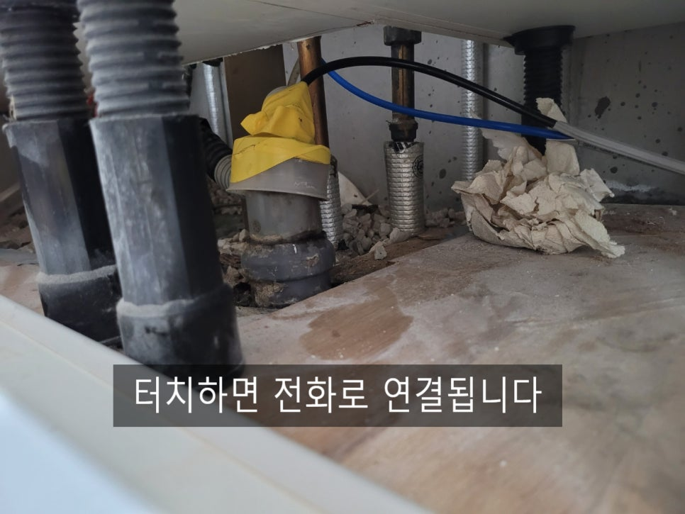
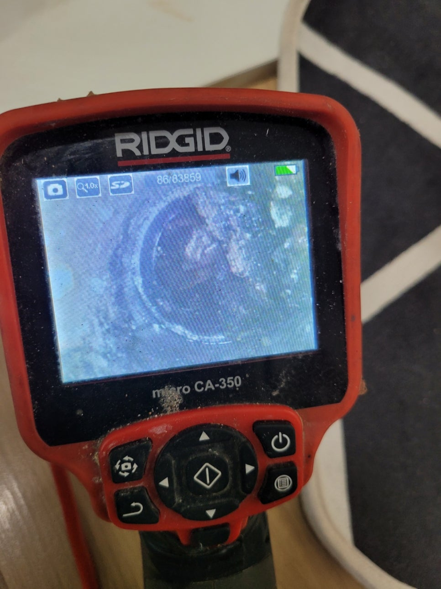
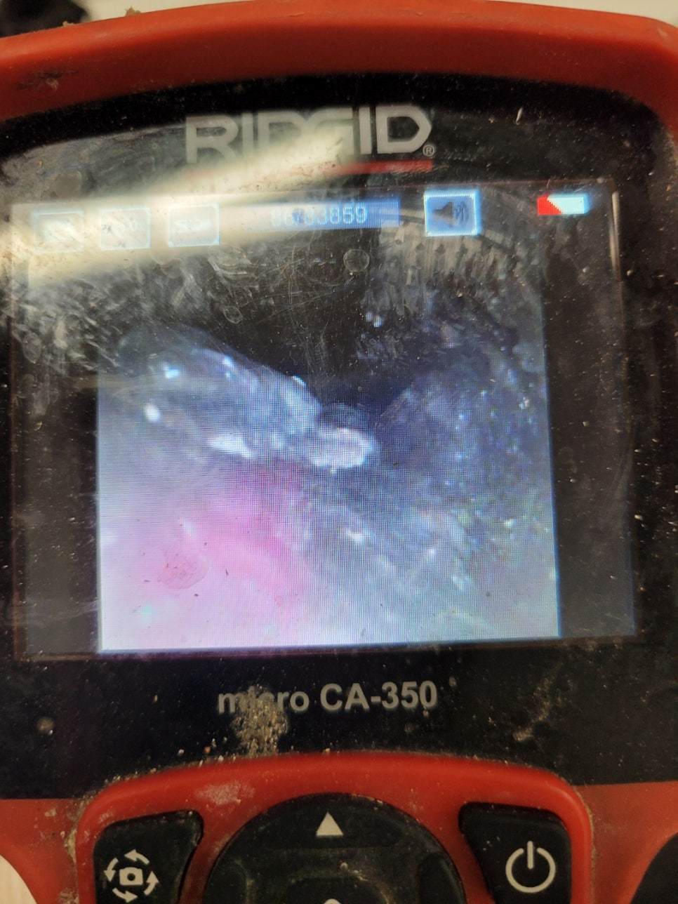
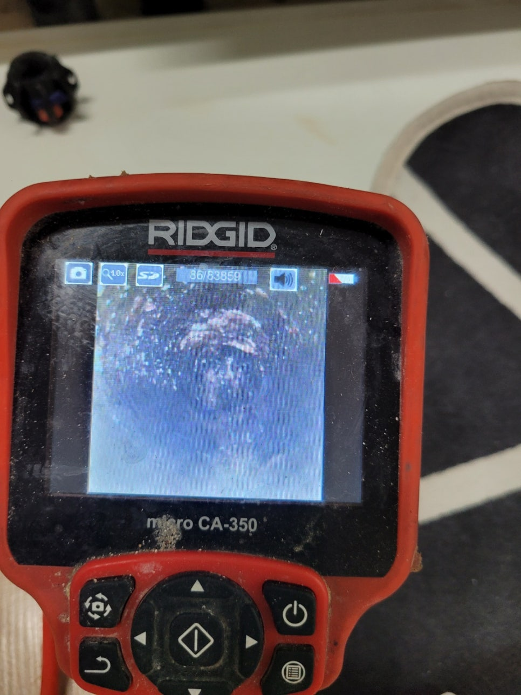
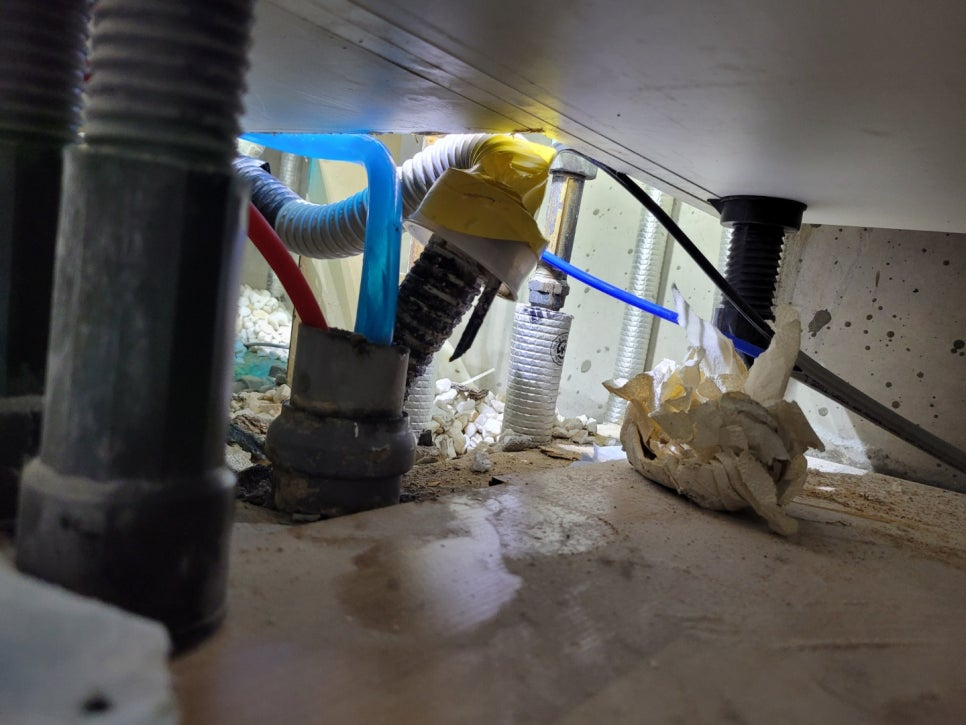

🏠 영통구 싱크대 막힘 광교동 신동 싱크대 뚫는 업체 도움이 필요한 곳 어디든~!
수원 싱크대막힘 전문 시공 후기

📋 작업 개요
- 위치: 수원
- 서비스 유형: 싱크대막힘, 하수구막힘, 배관막힘, 역류해결, 뚫는업체, 고압세척
- 작업 일시: 2022. 3. 21. 23:29
- 업체명: 하수구수사대 (010-5615-2118)
🔍 문제 상황
영통구 싱크대 막힘 광교동 신동 싱크대 뚫는 업체
우리가 자주 사용을 하는 공간인
싱크대는 막히는 증상들이
쉽게 일어나고 있습니다.
그래서 영통구 싱크대 막힘
광교동 신동 싱크대 뚫는 업체인
하수구수사대를 찾아 주시는 분들이
많이 늘어가게 되었어요.
배관 안쪽이 망가지게 된다면
물이 잘 내려가지 않는 것은 물론이며
배관 역류로 불편함을
겪게 될 수가 있습니다.
그리고 계속 방치를 하면 할수록
일상생활에 지장이 가기도 하고
생각을 했던 것보다
더 큰 비용이 발생할
가능성이 있습니다.
그러므로 되도록
문제가 발생하게 되었다면
이른 시일 내에 해결을
해 나가는 것이 중요해요.
일단, 가정에서 하수구가
막히게 되었을 때에는 펑크린이나
막힌 곳을 뚫을 수 있는

🔎 원인 분석
💡 전문가 진단: 하수구수사대최신장비보유!1년as 보장!주말,공휴일도 ok!010-2340-2118
여러 도구를 이용하여
해결하려고 하십니다.
단순한 막힘 현상일 경우에는
이런 식으로도 해결을
해 나가실 수가 있지만,
깊은 곳에 기름 덩어리나
여러 가지 음식물들이
많이 끼어 있을 때에는
또 똑같은 문제가 발생하게 돼요.
그래서 오늘은 이번에
영통구 싱크대 막힘
하수구수사대를 찾아 주시게 되었던
가정집에 방문을 했던 현장에 관해서
소개를 해보려고 합니다.
내시경 카메라를 통하여
배관을 살펴보니까 기름 덩어리가
상당히 많이 붙어 있는 것을
확인할 수가 있었습니다.
이러한 상태가 되어 버리게 된다면
펑크린이나 막힌 곳을 뚫을 수 있는
여러 도구를 활용한다고 하더라도
제대로 제거를 하는 것이 힘듭니다.
그래서 가지고 있는
고압세척기를 통해서
안에 들어가 있는 기름 덩어리를

🔧 작업 과정
제거하는 과정을 거치게 돼요.
이는 고압 호스를 배관에 넣어서
물을 고압으로 분사를 시켜
배관 안에 들어간 이물질을
빼내는 장비입니다.
이외에도 막힌 배관을 뚫는 방법은
여러 가지가 있습니다.
석션, 스프링 혹은 플렉스 샤프트 등
다양한 방법들이 있는데요.
상황에 따라서
각기 활용을 하는 종류들이 달라서
어떠한 케이스에
어떤 장비를 사용해야 하는지
정확한 판단을 할 줄 아는 업체를
만나는 것이 중요합니다.
많은 분들이 하수구는
그냥 물이 흘러가는 곳이라
크게 신경을 쓰지 않으시는
분들이 많습니다.
하지만 관리를 소홀히 하게 된다면
결국 여러 가지 문제점들이
발생하게 될 수가 있다는 점을
아실 필요가 있습니다.
그리고 만일 막혀 버리는 상황이
발생하게 되었다면
어떤 업체를 찾아 도움을 받는지도
굉장히 중요한 관건입니다.
간혹 수리를 받고 나서
며칠 안가 또다시 문제를 일으키는
경우들이 있어요.
그런 상황은
제대로 문제점을 파악하지 못하고
원인을 제거하지 못해
발생하는 상황으로
애초에 똑같은 일이 일어나지 않도록
초반에 문제점을 잘 판단하여
고치는 것이 중요합니다.
광교동 신동 싱크대 뚫는 업체는
그동안 쌓아온 경험과 노하우로


✅ 작업 완료
늘 만족하실 결과물을
얻어보실 수 있도록 노력하고 있으니
일상에 불편함을 겪는 중이라면
언제든지 문의해 주시기를 바랍니다.
하수구수사대
최신장비보유!
1년as 보장!
주말,공휴일도 ok!
010-2340-2118
경기도 수원시 영통구 봉영로 1612 7층 710-A19호




⚠️ 주방 싱크대 배관 막힘 예방 수칙
- ✅ 기름기가 묻은 식기나 프라이팬은 설거지 전 키친타올로 반드시 기름때를 닦아내세요.
- ✅ 주기적으로 싱크대 개수대에 뜨거운 물을 가득 받아 한 번에 내려 배관 내부 기름을 씻어내세요.
- ✅ 배수구 거름망을 미세한 필터로 사용하시고 음식물 찌꺼기가 틈으로 새어 들지 않게 관리하세요.
- ✅ 베이킹소다와 식초를 뜨거운 물과 함께 일주일에 한 번씩 부어주면 배관 살균과 막힘 예방에 좋습니다.
💡 핵심 정리
- 확실한 장비 작업(내시경 점검 및 샤프트 스케일링)으로 원인을 뿌리 뽑습니다.
- 작업 후 1년 이내에 동일한 부위 재발 시 100% 무상 A/S 서비스를 보장합니다.
- 서울 · 경기 · 인천 전 지역에 24시간 언제든 긴급 출동할 수 있도록 항시 대기 중입니다.
❓ 자주 묻는 질문 (FAQ)
🚨 수원 싱크대막힘 문제로 고민이신가요?
정확한 원인 진단과 확실한 시공으로 재발 없는 해결을 약속드립니다.
24시간 긴급 출동 | 서울 · 경기 · 인천 전지역 | 1년 내 재발 시 무상 A/S